Post Series Index
This is a blog post in the series about working with Custom Business Objects, Parsers and Decorators in PnP JS Core:
- Introduction to Why do we should use Custom Business Objects (Models) in PnP JS Core
- Creating select and expand TypeScript Property Decorators to be used in PnP JS Core
- Creating MyDocument and MyDocumentCollection models extending Item and Items PnP JS Core classes
- Create Custom Parser and Array Parser to unify select and property names
- How to consume our decorators, models and parsers from SPFx, the winning combination (this article)
- Github project! Please remember to “star” if you liked it!
Introduction
In the previous posts of this series we explained why we should use Custom Business Objects in PnP JS Core and we implemented TypeScript decorators, Custom Business Object inheriting from Item and Items PnP JS Core classes, and custom Parsers. In this article, we will see how to use all of them together in order to get the max benefit from querying PnP JS Core from SharePoint Framework Web Part.
SPFx Web Part sample
All code samples we are going to see here, actually, are implemented in this Github project: spfx-react-sp-pnp-js-property-decorators.
There are some requisites to have in order to run this webpart sample. 1. Create a list called PnPJSSample with four columns (ID, Title, Category and Quantity). 2. Upload some documents in the Documents library.
In the following code sample, we can see different ways to consume and query against PnP JS Core using different combinations of decorators, models and parsers:
Browser Console Screenshots
We can see after looking into the different code samples, how they actually work, and what is the result from the browser console:
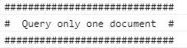
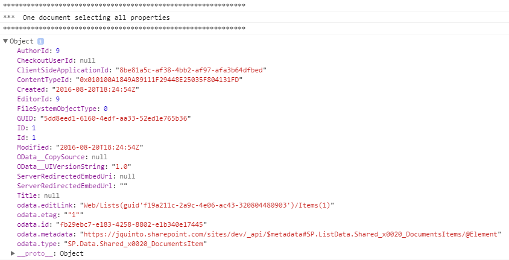
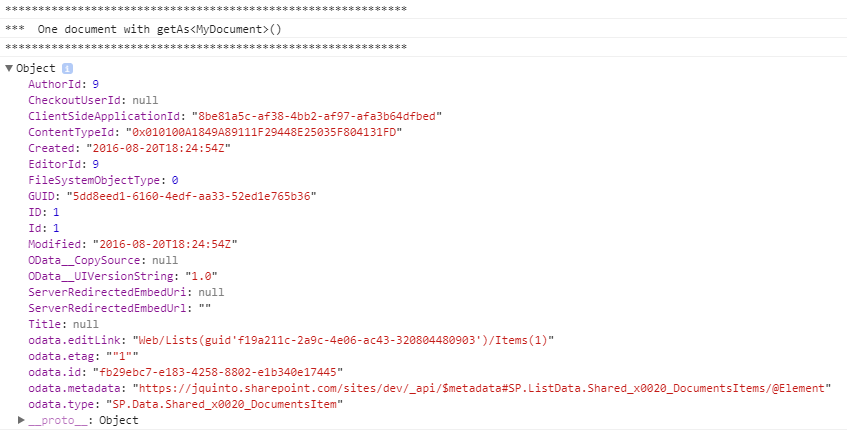
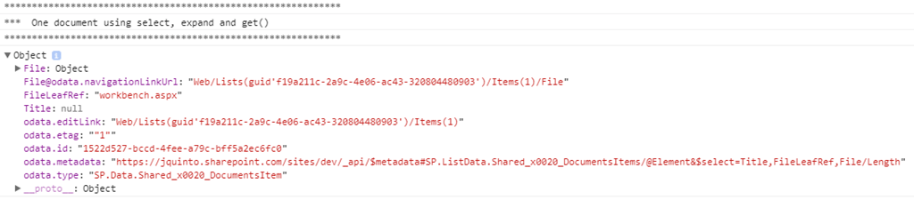
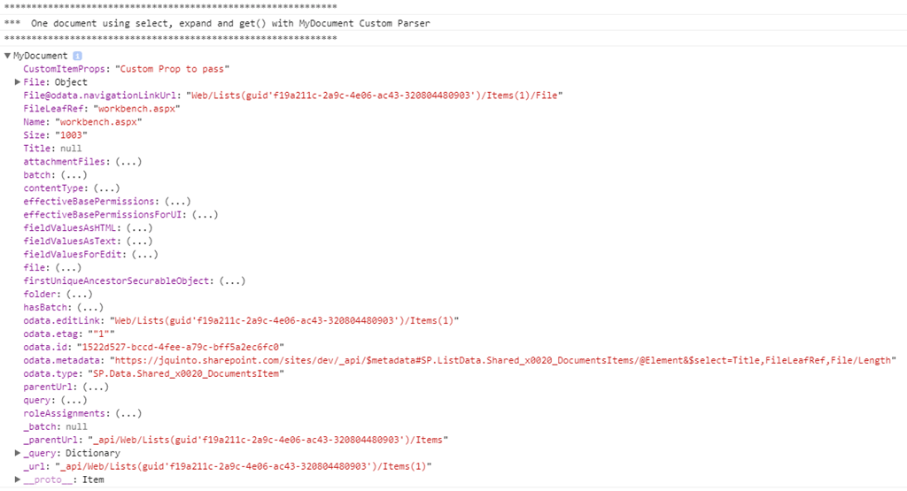
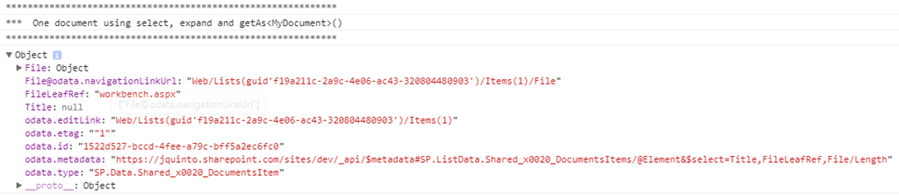
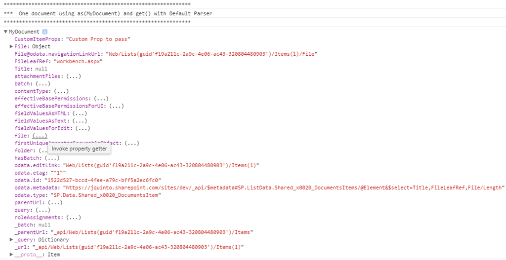
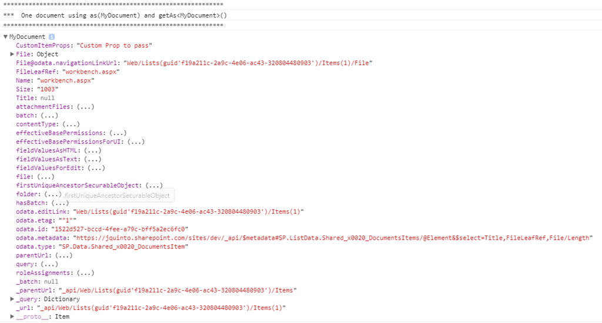
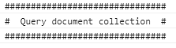
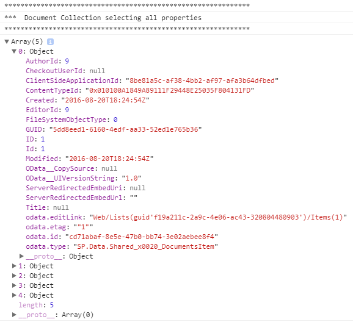
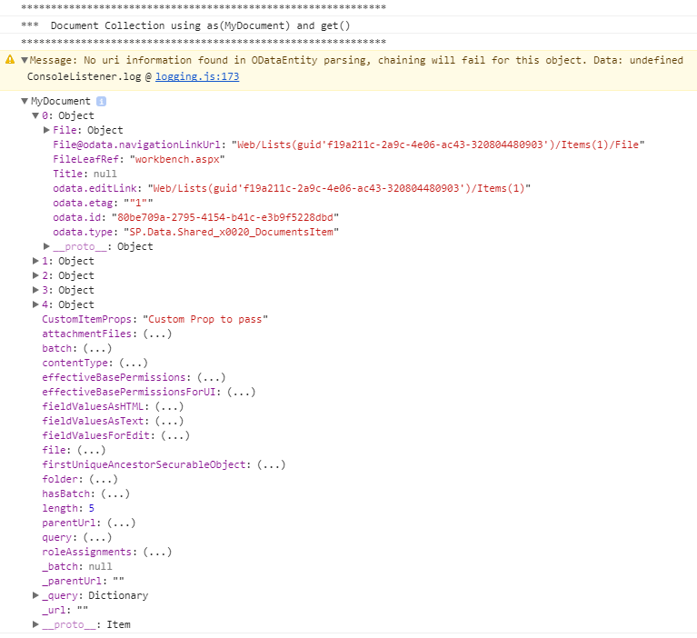
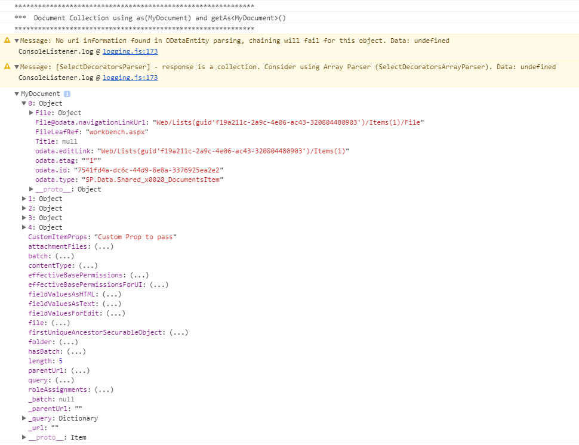
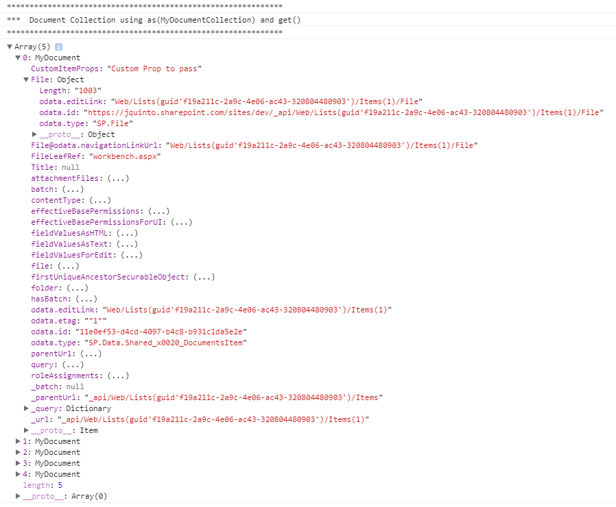
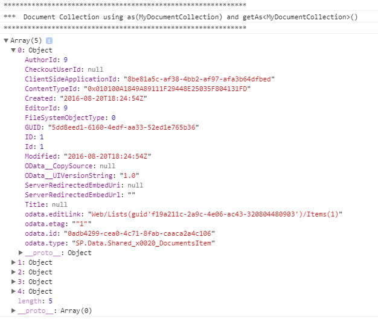
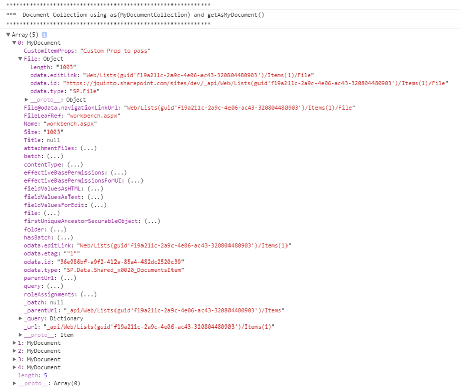
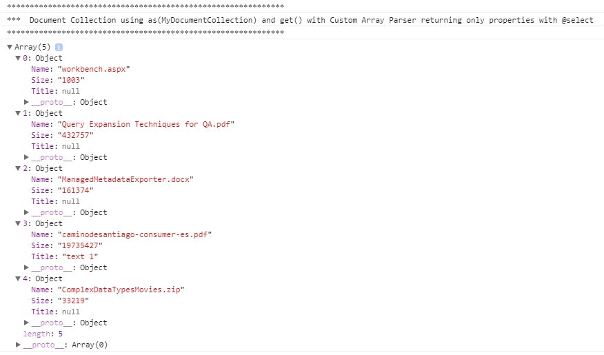

{kind=link}
{kind=link}
{kind=link}
{kind=link}
{kind=link}
{kind=link}
{kind=link}
{kind=link}
{kind=link}
{kind=link}
{kind=link}
{kind=link}
{kind=link}
{kind=link}
{kind=link}
{kind=link}
Conclusion
In my opinion, if we are going to create custom classes in our TypeScript projects for consuming SharePoint lists by using PnP JS Core, the ideal is being integrated with it. And by using decorators will do our life easier and our code more maintainable.
There are multiple ways to create and consume custom objects and parsers, but this post is intended to show the differences and give you an overview in order to decide what to use.
From my point of view, the ideal way to consume is:
Console Result:
{kind=link}
And the reason is because:
- We can use @select and @expand decorators efficiently
- We can continue using method chain after as(MyDocumentCollection). For example skip(1)
- JavaScript objects returned in the Array are named MyDocument (better for debugging)
- We can use intellisense in VS Code with our custom model properties (Size, Title and Name).